Web Server Statistics for songabout.fm
Web Server Statistics for songabout.fm
Program started on Sat, May 31 2014 at 6:33 AM.
Analyzed requests from Sun, Mar 30 2014 at 2:37 PM to Sat, May 31 2014 at 6:07 AM (61.65 days).
Web Server Statistics for songabout.fmProgram started on Sat, May 31 2014 at 6:33 AM.
Analyzed requests from Sun, Mar 30 2014 at 2:37 PM to Sat, May 31 2014 at 6:07 AM (61.65 days).
(Go To: Top | General Summary | Monthly Report | Daily Summary | Hourly Summary | Domain Report | Organization Report | Failed Referrer Report | Referring Site Report | Search Word Report | Browser Report | Browser Summary | Operating System Report | Status Code Report | File Size Report | File Type Report | Directory Report | Request Report)
Figures in parentheses refer to the 7-day period ending May 31 2014 at 6:33 AM.
Successful requests: 1,297,036 (70,635)
Average successful requests per day: 21,040 (10,090)
Successful requests for pages: 78,784 (5,108)
Average successful requests for pages per day: 1,277 (729)
Failed requests: 81,363 (123)
Redirected requests: 14 (0)
Distinct files requested: 461,968 (3,401)
Distinct hosts served: 622 (315)
Data transferred: 11.57 gigabytes (863.64 megabytes)
Average data transferred per day: 192.18 megabytes (123.38 megabytes)
(Go To: Top | General Summary | Monthly Report | Daily Summary | Hourly Summary | Domain Report | Organization Report | Failed Referrer Report | Referring Site Report | Search Word Report | Browser Report | Browser Summary | Operating System Report | Status Code Report | File Size Report | File Type Report | Directory Report | Request Report)
Each unit ( ) represents 1,500 requests for pages or part thereof.
) represents 1,500 requests for pages or part thereof.
| month | #reqs | #pages | |
|---|---|---|---|
| Mar 2014 | 1101 | 31 | |
| Apr 2014 | 987156 | 56641 |    |
| May 2014 | 308779 | 22112 |  |
Busiest month: Apr 2014 (56,641 requests for pages).
(Go To: Top | General Summary | Monthly Report | Daily Summary | Hourly Summary | Domain Report | Organization Report | Failed Referrer Report | Referring Site Report | Search Word Report | Browser Report | Browser Summary | Operating System Report | Status Code Report | File Size Report | File Type Report | Directory Report | Request Report)
Each unit () represents 400 requests for pages or part thereof.
| day | #reqs | #pages | |
|---|---|---|---|
| Sun | 175573 | 11775 |  |
| Mon | 199695 | 16537 | |
| Tue | 182504 | 8927 | |
| Wed | 138239 | 9260 | |
| Thu | 189968 | 11708 | |
| Fri | 212213 | 11511 | |
| Sat | 198844 | 9066 | |
(Go To: Top | General Summary | Monthly Report | Daily Summary | Hourly Summary | Domain Report | Organization Report | Failed Referrer Report | Referring Site Report | Search Word Report | Browser Report | Browser Summary | Operating System Report | Status Code Report | File Size Report | File Type Report | Directory Report | Request Report)
Each unit () represents 150 requests for pages or part thereof.
| hour | #reqs | #pages | |
|---|---|---|---|
| 0 | 51280 | 2983 | |
| 1 | 47737 | 2535 | |
| 2 | 49475 | 2536 | |
| 3 | 54920 | 3268 | |
| 4 | 53480 | 3205 | |
| 5 | 53335 | 2932 | |
| 6 | 57892 | 3528 | |
| 7 | 56443 | 3206 | |
| 8 | 48533 | 2418 | |
| 9 | 51308 | 3308 | |
| 10 | 50892 | 2971 | |
| 11 | 56073 | 3393 | |
| 12 | 56171 | 3569 | |
| 13 | 54070 | 3564 | |
| 14 | 51612 | 3318 | |
| 15 | 57705 | 3968 | |
| 16 | 64158 | 4972 | |
| 17 | 56377 | 3846 | |
| 18 | 55872 | 3290 | |
| 19 | 55917 | 3331 | |
| 20 | 56942 | 3384 | |
| 21 | 51837 | 3037 | |
| 22 | 55146 | 3264 | |
| 23 | 49861 | 2958 | |
(Go To: Top | General Summary | Monthly Report | Daily Summary | Hourly Summary | Domain Report | Organization Report | Failed Referrer Report | Referring Site Report | Search Word Report | Browser Report | Browser Summary | Operating System Report | Status Code Report | File Size Report | File Type Report | Directory Report | Request Report)
Listing domains, sorted by the amount of traffic.
| #reqs | %bytes | domain |
|---|---|---|
| 28044 | 100% | [unresolved numerical addresses] |
(Go To: Top | General Summary | Monthly Report | Daily Summary | Hourly Summary | Domain Report | Organization Report | Failed Referrer Report | Referring Site Report | Search Word Report | Browser Report | Browser Summary | Operating System Report | Status Code Report | File Size Report | File Type Report | Directory Report | Request Report)
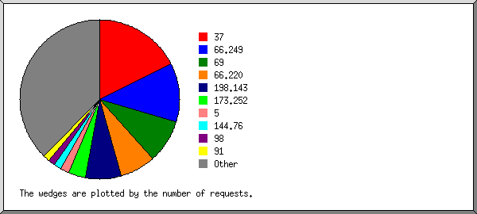
Listing the top 20 organizations by the number of requests, sorted by the number of requests.
| #reqs | %bytes | organization |
|---|---|---|
| 5885 | 37.36% | 69 |
| 4346 | 5.14% | 37 |
| 2994 | 4.81% | 66.220 |
| 2808 | 21.96% | 173.252 |
| 2765 | 3.10% | 66.249 |
| 701 | 1.08% | 5 |
| 341 | 0.38% | 176.9 |
| 312 | 0.47% | 148.251 |
| 300 | 0.33% | 173.208 |
| 281 | 1.05% | 91 |
| 279 | 0.29% | 67.255 |
| 275 | 0.41% | 94 |
| 212 | 0.98% | 98 |
| 210 | 0.49% | 108 |
| 197 | 0.23% | 217.79 |
| 196 | 0.29% | 144.76 |
| 191 | 0.27% | 157.55 |
| 190 | 0.76% | 70 |
| 176 | 0.83% | 71 |
| 176 | 0.42% | 109 |
| 5209 | 19.35% | [not listed: 133 organizations] |
(Go To: Top | General Summary | Monthly Report | Daily Summary | Hourly Summary | Domain Report | Organization Report | Failed Referrer Report | Referring Site Report | Search Word Report | Browser Report | Browser Summary | Operating System Report | Status Code Report | File Size Report | File Type Report | Directory Report | Request Report)
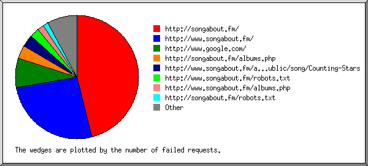
Listing referring URLs, sorted by the number of failed requests.
(Go To: Top | General Summary | Monthly Report | Daily Summary | Hourly Summary | Domain Report | Organization Report | Failed Referrer Report | Referring Site Report | Search Word Report | Browser Report | Browser Summary | Operating System Report | Status Code Report | File Size Report | File Type Report | Directory Report | Request Report)
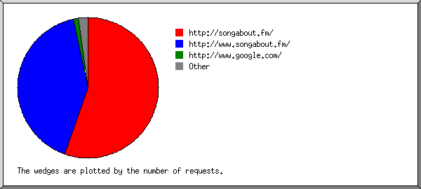
Listing the top 30 referring sites by the number of requests, sorted by the number of requests.
| #reqs | site |
|---|---|
| 4910 | http://www.songabout.fm/ |
| 3602 | http://songabout.fm/ |
| 51 | http://translate.googleusercontent.com/ |
| 39 | http://www.google.co.in/ |
| 38 | http://www.google.co.ve/ |
| 33 | https://www.google.com/ |
| 29 | http://www.google.com/ |
| 5 | http://www.google.ca/ |
| 5 | https://www.google.co.uk/ |
| 3 | https://www.google.ca/ |
| 3 | http://www.google.co.uk/ |
| 3 | http://www.google.com.au/ |
| 3 | https://www.google.de/ |
| 3 | http://yandex.ru/ |
| 3 | http://startupucla.com/ |
| 2 | https://www.google.com.au/ |
| 2 | https://www.google.com.ph/ |
| 2 | http://www.google.se/ |
| 2 | http://www.google.gr/ |
| 2 | https://www.google.com.pk/ |
| 1 | https://www.google.nl/ |
| 1 | https://www.google.co.za/ |
| 1 | http://www.google.fi/ |
| 1 | https://www.google.co.th/ |
| 1 | https://www.google.no/ |
| 1 | http://whois.domaintools.com/ |
| 1 | https://www.google.com.ar/ |
| 1 | http://www.google.co.il/ |
| 1 | https://www.google.ch/ |
| 1 | http://shmotki.99gb.net/ |
| 7 | [not listed: 7 sites] |
(Go To: Top | General Summary | Monthly Report | Daily Summary | Hourly Summary | Domain Report | Organization Report | Failed Referrer Report | Referring Site Report | Search Word Report | Browser Report | Browser Summary | Operating System Report | Status Code Report | File Size Report | File Type Report | Directory Report | Request Report)
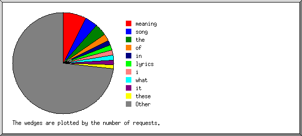
Listing the top 30 query words by the number of requests, sorted by the number of requests.
| #reqs | search term |
|---|---|
| 7 | meaning |
| 4 | the |
| 4 | of |
| 3 | song |
| 1 | its |
| 1 | to |
| 1 | care |
| 1 | time |
| 1 | moe |
| 1 | low |
| 1 | munni |
| 1 | john |
| 1 | i'll |
| 1 | pimps |
| 1 | billy |
| 1 | porter |
| 1 | jungle |
| 1 | here's |
| 1 | dee |
| 1 | shinedown |
| 1 | khatir |
| 1 | you're |
| 1 | highest |
| 1 | meanging |
| 1 | jal |
| 1 | begum |
| 1 | rahe |
| 1 | coltrane |
| 1 | a |
| 1 | soul |
| 25 | [not listed: 25 search terms] |
(Go To: Top | General Summary | Monthly Report | Daily Summary | Hourly Summary | Domain Report | Organization Report | Failed Referrer Report | Referring Site Report | Search Word Report | Browser Report | Browser Summary | Operating System Report | Status Code Report | File Size Report | File Type Report | Directory Report | Request Report)
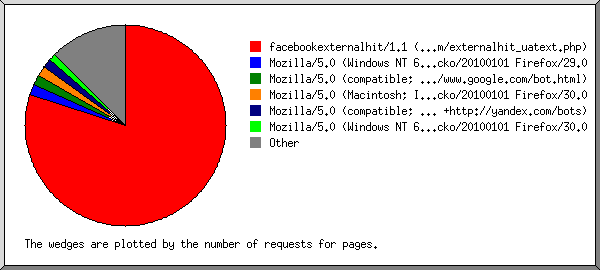
Listing browsers with at least 1 request for a page, sorted by the number of requests for pages.
| #reqs | #pages | browser |
|---|---|---|
| 11466 | 1925 | facebookexternalhit/1.1 (+http://www.facebook.com/externalhit_uatext.php) |
| 113 | 12 | Mozilla/5.0 (Windows NT 6.1; rv:29.0) Gecko/20100101 Firefox/29.0 |
| 73 | 8 | Mozilla/5.0 (compatible; YandexBot/3.0; +http://yandex.com/bots) |
| 4149 | 7 | Mozilla/5.0 (compatible; MJ12bot/v1.4.5; http://www.majestic12.co.uk/bot.php?+) |
| 2688 | 6 | Mozilla/5.0 (compatible; Googlebot/2.1; +http://www.google.com/bot.html) |
| 54 | 3 | Mozilla/5.0 (Macintosh; Intel Mac OS X 10_9_3) AppleWebKit/537.36 (KHTML, like Gecko) Chrome/35.0.1916.114 Safari/537.36 |
| 119 | 2 | Mozilla/5.0 (Windows NT 6.3; WOW64) AppleWebKit/537.36 (KHTML, like Gecko) Chrome/35.0.1916.114 Safari/537.36 |
| 31 | 2 | Mozilla/5.0 (Macintosh; Intel Mac OS X 10_7_5) AppleWebKit/537.36 (KHTML, like Gecko) Chrome/34.0.1847.131 Safari/537.36 |
| 114 | 2 | Mozilla/5.0 (Windows NT 6.2; WOW64) AppleWebKit/537.36 (KHTML, like Gecko) Chrome/35.0.1916.114 Safari/537.36 |
| 2 | 2 | rogerbot/1.0 (http://moz.com/help/pro/what-is-rogerbot-, rogerbot-wherecat@moz.com) |
| 2 | 2 | Mozilla/5.0 (Windows NT 6.1; Win64; x64; rv:25.0) Gecko/20100101 Firefox/25.0 |
| 4133 | 2 | Mozilla/5.0 (compatible; AhrefsBot/5.0; +http://ahrefs.com/robot/) |
| 233 | 2 | Mozilla/5.0 (Windows NT 6.1) AppleWebKit/537.36 (KHTML, like Gecko) Chrome/35.0.1916.114 Safari/537.36 |
| 85 | 2 | Mozilla/5.0 (Macintosh; Intel Mac OS X 10_9_2) AppleWebKit/537.36 (KHTML, like Gecko) Chrome/35.0.1916.114 Safari/537.36 |
| 1 | 1 | Mozilla/5.0 (Windows; U; Windows NT 5.1; en; rv:1.9.0.13) Gecko/2009073022 Firefox/3.5.2 (.NET CLR 3.5.30729) SurveyBot/2.3 (DomainTools) |
| 2 | 1 | Mozilla/5.0 (Windows NT 6.1; rv:6.0) Gecko/20110814 Firefox/6.0 Google favicon |
| 95 | 1 | Mozilla/5.0 (compatible; Baiduspider/2.0; +http://www.baidu.com/search/spider.html) |
| 305 | 1 | Mozilla/5.0 (compatible; bingbot/2.0; +http://www.bing.com/bingbot.htm) |
| 1 | 1 | Mozilla/5.0 (Macintosh; Intel Mac OS X 10_8_5) AppleWebKit/537.36 (KHTML, like Gecko) Chrome/35.0.1916.114 Safari/537.36 |
| 393 | 1 | Mozilla/5.0 (iPhone; CPU iPhone OS 7_1_1 like Mac OS X) AppleWebKit/537.51.2 (KHTML, like Gecko) Version/7.0 Mobile/11D201 Safari/9537.53 |
| 1 | 1 | Mozilla/5.0 (X11; U; Linux x86_64; en-US) AppleWebKit/532.9 (KHTML, like Gecko) Chrome/5.0.307.7 Safari/532.9 |
| 1 | 1 | Mozilla/4.0 (compatible; MSIE 8.0; Windows NT 6.1; Trident/4.0; SLCC2; .NET CLR 2.0.50727; .NET CLR 3.5.30729; .NET CLR 3.0.30729; Media Center PC 6.0; InfoPath.3; .NET4.0C; .NET4.0E) |
| 5 | 1 | Mozilla/5.0 (iPhone; CPU iPhone OS 6_0 like Mac OS X) AppleWebKit/536.26 (KHTML, like Gecko) Version/6.0 Mobile/10A5376e Safari/8536.25 (compatible; Googlebot/2.1; +http://www.google.com/bot.html) |
| 32 | 1 | Mozilla/5.0 (Macintosh; Intel Mac OS X 10_7_5) AppleWebKit/534.57.7 (KHTML, like Gecko) Version/5.1.7 Safari/534.57.7 |
| 30 | 1 | Mozilla/5.0 (Windows NT 6.1; WOW64) AppleWebKit/537.36 (KHTML, like Gecko) Chrome/34.0.1847.116 Safari/537.36 |
| 81 | 1 | Mozilla/5.0 (Macintosh; Intel Mac OS X 10_6_8) AppleWebKit/537.36 (KHTML, like Gecko) Chrome/35.0.1916.114 Safari/537.36 |
| 29 | 1 | Mozilla/5.0 (Macintosh; Intel Mac OS X 10_9_1) AppleWebKit/537.36 (KHTML, like Gecko) Chrome/35.0.1916.114 Safari/537.36 |
| 3803 | 0 | [not listed: 136 browsers] |
(Go To: Top | General Summary | Monthly Report | Daily Summary | Hourly Summary | Domain Report | Organization Report | Failed Referrer Report | Referring Site Report | Search Word Report | Browser Report | Browser Summary | Operating System Report | Status Code Report | File Size Report | File Type Report | Directory Report | Request Report)
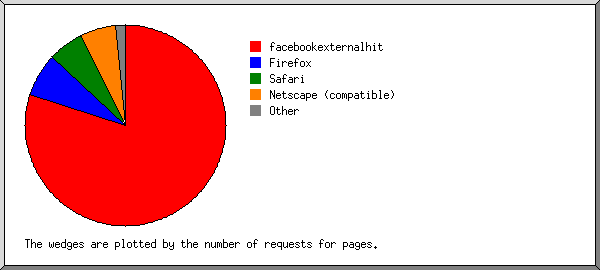
Listing browsers with at least 1 request for a page, sorted by the number of requests for pages.
| # | #reqs | #pages | browser |
|---|---|---|---|
| 1 | 11466 | 1925 | facebookexternalhit |
| 11466 | 1925 | facebookexternalhit/1 | |
| 2 | 11456 | 25 | Netscape (compatible) |
| 3 | 3443 | 21 | Safari |
| 2056 | 17 | Safari/537 | |
| 862 | 1 | Safari/9537 | |
| 1 | 1 | Safari/532 | |
| 290 | 1 | Safari/534 | |
| 153 | 1 | Safari/8536 | |
| 4 | 1033 | 16 | Firefox |
| 779 | 12 | Firefox/29 | |
| 2 | 2 | Firefox/25 | |
| 2 | 1 | Firefox/3 | |
| 2 | 1 | Firefox/6 | |
| 5 | 2 | 2 | rogerbot |
| 2 | 2 | rogerbot/1 | |
| 6 | 224 | 1 | MSIE |
| 29 | 1 | MSIE/8 | |
| 417 | 0 | [not listed: 4 browsers] |
(Go To: Top | General Summary | Monthly Report | Daily Summary | Hourly Summary | Domain Report | Organization Report | Failed Referrer Report | Referring Site Report | Search Word Report | Browser Report | Browser Summary | Operating System Report | Status Code Report | File Size Report | File Type Report | Directory Report | Request Report)
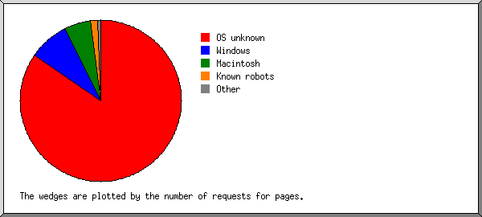
Listing operating systems, sorted by the number of requests for pages.
| # | #reqs | #pages | OS |
|---|---|---|---|
| 1 | 18955 | 1949 | OS unknown |
| 2 | 2327 | 24 | Windows |
| 2017 | 23 | Unknown Windows | |
| 308 | 1 | Windows XP | |
| 1 | 0 | Windows 95 | |
| 1 | 0 | Windows 2000 | |
| 3 | 1799 | 13 | Macintosh |
| 4 | 4228 | 3 | Known robots |
| 5 | 732 | 1 | Unix |
| 650 | 1 | Linux | |
| 82 | 0 | Other Unix |
(Go To: Top | General Summary | Monthly Report | Daily Summary | Hourly Summary | Domain Report | Organization Report | Failed Referrer Report | Referring Site Report | Search Word Report | Browser Report | Browser Summary | Operating System Report | Status Code Report | File Size Report | File Type Report | Directory Report | Request Report)
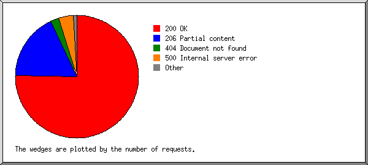
Listing status codes, sorted numerically.
| #reqs | status code |
|---|---|
| 16531 | 200 OK |
| 11466 | 206 Partial content |
| 47 | 304 Not modified since last retrieval |
| 472 | 404 Document not found |
| 1199 | 500 Internal server error |
(Go To: Top | General Summary | Monthly Report | Daily Summary | Hourly Summary | Domain Report | Organization Report | Failed Referrer Report | Referring Site Report | Search Word Report | Browser Report | Browser Summary | Operating System Report | Status Code Report | File Size Report | File Type Report | Directory Report | Request Report)
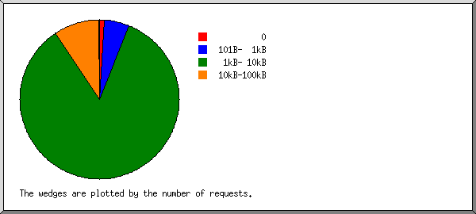
| size | #reqs | %bytes |
|---|---|---|
| 0 | 47 | |
| 1B- 10B | 0 | |
| 11B- 100B | 0 | |
| 101B- 1kB | 992 | 0.18% |
| 1kB- 10kB | 23564 | 30.58% |
| 10kB-100kB | 3423 | 67.26% |
| 100kB- 1MB | 18 | 1.98% |
(Go To: Top | General Summary | Monthly Report | Daily Summary | Hourly Summary | Domain Report | Organization Report | Failed Referrer Report | Referring Site Report | Search Word Report | Browser Report | Browser Summary | Operating System Report | Status Code Report | File Size Report | File Type Report | Directory Report | Request Report)
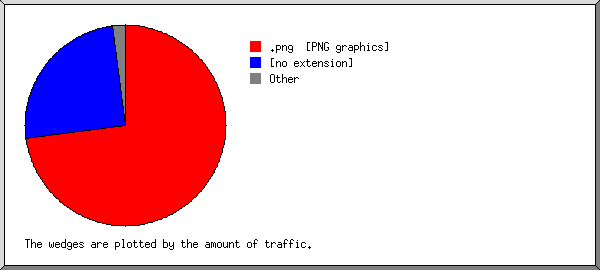
Listing extensions with at least 0.1% of the traffic, sorted by the amount of traffic.
| #reqs | %bytes | extension |
|---|---|---|
| 164350 | 70.02% | .png [PNG graphics] |
| 730535 | 27.94% | [no extension] |
| 8027 | 0.72% | .js [JavaScript code] |
| 4023 | 0.22% | .jpg [JPEG graphics] |
| 2132 | 0.18% | .php [PHP] |
| 956 | 0.14% | .swf |
| 2281 | 0.11% | [directories] |
| 24847 | 0.66% | [not listed: 7,679 extensions] |
(Go To: Top | General Summary | Monthly Report | Daily Summary | Hourly Summary | Domain Report | Organization Report | Failed Referrer Report | Referring Site Report | Search Word Report | Browser Report | Browser Summary | Operating System Report | Status Code Report | File Size Report | File Type Report | Directory Report | Request Report)
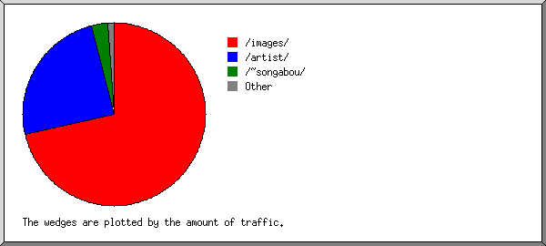
Listing directories with at least 0.01% of the traffic, sorted by the amount of traffic.
| #reqs | %bytes | directory |
|---|---|---|
| 167774 | 68.71% | /images/ |
| 727806 | 27.68% | /artist/ |
| 19287 | 2.42% | /~songabou/ |
| 8988 | 0.86% | /scripts/ |
| 5174 | 0.29% | [root directory] |
| 8122 | 0.05% | /styles/ |
(Go To: Top | General Summary | Monthly Report | Daily Summary | Hourly Summary | Domain Report | Organization Report | Failed Referrer Report | Referring Site Report | Search Word Report | Browser Report | Browser Summary | Operating System Report | Status Code Report | File Size Report | File Type Report | Directory Report | Request Report)
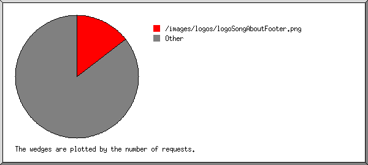
Listing files with at least 20 requests, sorted by the number of requests.
| #reqs | %bytes | last time | file |
|---|---|---|---|
| 129526 | 62.90% | May/31/14 6:05 AM | /images/logos/logoSongAboutFooter.png |
| 3922 | 0.21% | May/31/14 6:05 AM | /images/logos/songaboutNavLogo.png |
| 3305 | 0.09% | May/31/14 5:57 AM | /images/noSGcover.png |
| 2109 | 0.02% | May/31/14 5:57 AM | /scripts/hooks/echonest-hook.js |
| 2101 | 0.02% | May/31/14 5:57 AM | /scripts/facebook/facebookLogin.js |
| 2004 | 0.01% | May/31/14 5:57 AM | /styles/album.css |
| 2002 | May/31/14 5:57 AM | /styles/homepageImage.css | |
| 1994 | 0.02% | May/31/14 5:57 AM | /styles/artist.css |
| 1987 | 0.10% | May/31/14 6:05 AM | / |
| 1973 | 0.02% | May/31/14 5:57 AM | /styles/song.css |
| 1881 | 0.11% | May/31/14 5:57 AM | /images/nav/albums.jpg |
| 1880 | 0.10% | May/31/14 5:57 AM | /images/nav/lyrics.jpg |
| 1873 | 0.05% | May/31/14 5:57 AM | /images/nav/search.png |
| 1865 | 0.67% | May/31/14 5:57 AM | /scripts/soundmanager/soundmanager2.js |
| 1849 | 1.44% | May/31/14 5:57 AM | /images/icons/iconFooterEmail.png |
| 1835 | 0.03% | May/31/14 5:57 AM | /images/buttons/footer_google.png |
| 1832 | 0.03% | May/31/14 5:57 AM | /images/buttons/footer_twitter.png |
| 1831 | 0.02% | May/31/14 5:57 AM | /images/buttons/footer_facebook.png |
| 1823 | 0.02% | May/31/14 5:57 AM | /images/buttons/footer_tumblr.png |
| 1823 | 0.04% | May/31/14 5:57 AM | /images/buttons/sa_twitter_icon.png |
| 1811 | 0.03% | May/31/14 5:57 AM | /images/buttons/sa_tumblr_icon.png |
| 1808 | 0.04% | May/31/14 5:57 AM | /images/buttons/sa_instagram_icon.png |
| 1807 | 0.01% | May/31/14 5:57 AM | /scripts/soundmanager/songabout-hook.js |
| 1630 | 1.07% | May/31/14 5:57 AM | /images/icons/songaboutIconFB.png |
| 1629 | 1.07% | May/31/14 5:57 AM | /images/icons/songaboutIconShare.png |
| 1541 | 0.08% | May/31/14 5:57 AM | /images/buttons/biography_button.png |
| 1530 | 0.06% | May/31/14 5:57 AM | /images/buttons/music_button.png |
| 1525 | 0.06% | May/31/14 5:57 AM | /images/buttons/play_video_button.png |
| 1075 | 0.01% | May/31/14 5:57 AM | /favicon.ico |
| 1075 | 0.08% | May/31/14 6:06 AM | /artist.php |
| 40 | May/30/14 8:25 PM | /artist.php?letter=G | |
| 37 | May/30/14 2:44 PM | /artist.php?letter=Z | |
| 37 | May/26/14 8:06 PM | /artist.php?letter=A | |
| 37 | May/29/14 7:14 PM | /artist.php?letter=P | |
| 36 | May/30/14 9:41 PM | /artist.php?letter=F | |
| 36 | May/28/14 7:42 AM | /artist.php?letter=I | |
| 35 | May/27/14 7:50 PM | /artist.php?letter=C | |
| 35 | May/30/14 7:38 PM | /artist.php?letter=E | |
| 34 | May/31/14 4:25 AM | /artist.php?letter=T | |
| 34 | May/30/14 10:08 AM | /artist.php?letter=H | |
| 34 | May/26/14 3:18 PM | /artist.php?letter=K | |
| 34 | May/31/14 2:54 AM | /artist.php?letter=N | |
| 33 | May/31/14 2:18 AM | /artist.php?letter=X | |
| 33 | May/30/14 11:23 AM | /artist.php?letter=B | |
| 33 | May/27/14 1:56 PM | /artist.php?letter=D | |
| 32 | May/30/14 10:23 PM | /artist.php?letter=Y | |
| 32 | May/30/14 9:45 PM | /artist.php?letter=M | |
| 32 | May/29/14 7:14 PM | /artist.php?letter=O | |
| 31 | May/28/14 7:45 PM | /artist.php?letter=S | |
| 31 | May/30/14 8:53 PM | /artist.php?letter=J | |
| 31 | May/29/14 7:24 PM | /artist.php?letter=R | |
| 30 | May/30/14 8:12 PM | /artist.php?letter=Q | |
| 28 | May/27/14 3:30 PM | /artist.php?letter=U | |
| 28 | May/30/14 12:32 PM | /artist.php?letter=V | |
| 28 | May/30/14 11:27 PM | /artist.php?letter=W | |
| 28 | May/31/14 3:51 AM | /artist.php?letter=L | |
| 1033 | 0.77% | May/31/14 12:50 AM | /images/icons/iconFooterCall.png |
| 956 | 0.14% | May/31/14 4:52 AM | /scripts/soundmanager/swf/soundmanager2_flash9_debug.swf |
| 493 | 0.33% | May/31/14 5:35 AM | /images/backgrounds/songaboutSectionBG.png |
| 387 | 1.37% | May/31/14 12:50 AM | /~songabou/images/homePageSlides/songaboutSlideRihanna.png |
| 224 | 0.01% | May/30/14 5:40 PM | /images/buttons/playButton.png |
| 213 | 0.01% | May/31/14 2:07 AM | /verified_artist.php |
| 191 | 0.02% | May/31/14 6:01 AM | /about-us.php |
| 154 | 0.01% | May/31/14 12:50 AM | /images/buttons/buttonBuyShirt.png |
| 151 | 0.01% | May/30/14 3:49 PM | /songabout-careers.php |
| 147 | May/31/14 5:57 AM | /styles/main.css | |
| 147 | 0.02% | May/31/14 5:52 AM | /albums.php |
| 145 | May/31/14 5:57 AM | /scripts/simpSocialPop.js | |
| 131 | 0.01% | May/31/14 5:57 AM | /images/nav/verified_artists.jpg |
| 131 | May/31/14 5:57 AM | /images/buttons/sa_facebook_icon.png | |
| 131 | 0.01% | May/31/14 5:57 AM | /images/nav/artists.jpg |
| 121 | 0.01% | May/31/14 5:57 AM | /images/buttons/claim_page_button.png |
| 121 | 0.09% | May/31/14 5:57 AM | /images/icons/songaboutIconTwitter.png |
| 118 | May/29/14 8:50 PM | /artist/Ellie-Goulding/song/Burn | |
| 115 | 0.03% | May/31/14 5:57 AM | /conditions.php |
| 106 | May/27/14 7:29 PM | /search-results.php | |
| 100 | 0.01% | May/29/14 9:14 AM | /artist/Katy-Perry/song/Dark-Horse |
| 95 | May/31/14 12:50 AM | /~songabou/images/buttons/verify_me.png | |
| 90 | 0.01% | May/31/14 6:01 AM | /privacy-policy.php |
| 81 | May/31/14 12:50 AM | /images/buttons/buy_song_button.png | |
| 60 | May/29/14 3:24 PM | /artist/OneRepublic/song/Counting-Stars | |
| 55 | May/31/14 12:50 AM | /images/buttons/header_google.png | |
| 55 | May/31/14 12:50 AM | /images/buttons/header_like.png | |
| 55 | May/30/14 4:27 AM | /~songabou/artist/Jason Der%C3%BClo | |
| 52 | May/29/14 11:21 AM | /artist/Arctic-Monkeys/song/Do-I-Wanna-Know | |
| 52 | 0.08% | May/30/14 12:01 PM | /~songabou/images/aboutHeaderImageNew.png |
| 51 | 0.01% | May/30/14 4:24 AM | /artist/Afrojack/song/The-Spark-(Ti%C3%ABsto-vs-twoloud-Remix) |
| 50 | May/31/14 12:50 AM | /images/aboutHeaderImageBG.png | |
| 46 | May/30/14 4:19 AM | /artist/Dirty-South/song/Phazing-(Ti%C3%ABsto-Remix) | |
| 45 | May/30/14 11:57 PM | /artist/Imagine-Dragons/album/Night-Visions | |
| 41 | Apr/ 6/14 5:17 PM | /images/buttons/header_facebook.png | |
| 41 | 0.09% | May/30/14 3:49 PM | /~songabou/images/aboutHeaderImage.png |
| 40 | May/29/14 6:16 PM | /artist/Michael-Jackson/song/Off-the-Wall | |
| 39 | May/30/14 11:38 AM | /artist/Calvin-Harris/song/Summer | |
| 39 | May/29/14 4:49 PM | /artist/Coldplay/album/Viva-La-Vida-or-Death-and-All-His-Friends | |
| 39 | Apr/ 6/14 3:38 PM | /images/buttons/header_twitter.png | |
| 37 | May/30/14 3:58 AM | /artist/Daft-Punk/song/Doin%E2%80%99-It-Right-(feat.-Panda-Bear) | |
| 36 | May/28/14 9:05 AM | /artist/Passenger/song/Let-Her-Go | |
| 34 | May/30/14 5:41 AM | /artist/Beyonce | |
| 34 | May/30/14 11:15 PM | /artist/Katy-Perry | |
| 32 | May/30/14 8:18 AM | /artist/Jason-Der%C3%BClo/bio | |
| 31 | May/30/14 3:58 AM | /artist/Ashlee-Simpson/song/Outta-My-Head-(Ay-Ya-Ya)-(Dave-Aud%C3%A9-Remix---Radio-Edit) | |
| 31 | May/29/14 10:57 AM | /artist/Michael-Jackson/song/Man-in-the-Mirror | |
| 31 | May/27/14 11:02 AM | /artist/Drake/song/Hold-On-Were-Going-Home | |
| 31 | May/30/14 10:41 AM | /artist/Avicii | |
| 31 | May/26/14 1:21 AM | /artist/Lorde | |
| 31 | 0.01% | May/29/14 9:30 PM | /artist/Roald-Velden |
| 30 | May/30/14 3:45 AM | /artist/%C2%A1All-Time-Quarterback! | |
| 29 | May/31/14 5:58 AM | /artist/Kany-Garc%C3%ADa | |
| 29 | May/30/14 12:09 AM | /artist/Avicii/song/Wake-Me-Up | |
| 29 | May/30/14 4:01 AM | /artist/Regina-Spektor/song/D%C3%BCsseldorf-(Bonus-Album-Version) | |
| 27 | May/30/14 3:38 AM | /artist/Belinda/song/Boba-Ni%C3%B1a-Nice-(Remix-Ni%C3%B1o-Power) | |
| 27 | May/28/14 3:06 AM | /artist/Shakira/album/Shakira | |
| 27 | May/30/14 3:46 AM | /artist/Belinda/song/Ni%C3%B1a-De-Ayer-(Everyday-Girl) | |
| 27 | May/17/14 10:41 PM | /artist/Miley-Cyrus/song/Adore-You | |
| 27 | May/30/14 3:57 AM | /artist/Sentidos-Opuestos/song/Ardiente-Tentaci%C3%B3n-(Live) | |
| 27 | May/30/14 7:08 AM | /artist/Clean-Bandit/song/Rather-Be | |
| 26 | May/30/14 5:21 AM | /artist/Linval-Thompson-Meets-King-Tubby | |
| 26 | May/27/14 10:58 AM | /artist/Naughty-Boy/song/La-La-La | |
| 26 | May/31/14 5:58 AM | /artist/S%C3%A9bastien-L%C3%A9ger | |
| 26 | May/30/14 3:50 AM | /artist/Chayanne/song/Baila-Baila-(Mem%C3%A9's-Boriqua-Radio-Edit) | |
| 26 | May/30/14 4:23 AM | /artist/Sentidos-Opuestos/song/Fuego-Y-Pasi%C3%B3n-(Live) | |
| 26 | May/30/14 3:53 AM | /artist/La-Quinta-Estaci%C3%B3n/bio | |
| 26 | May/23/14 2:29 AM | /artist/Katy-Perry/song/Unconditionally | |
| 25 | May/30/14 3:48 AM | /artist/Beyonc%C3%A9/song/Why-Don't-You-Love-Me | |
| 25 | May/29/14 11:13 AM | /artist/Michael-Jackson/song/It's-the-Falling-in-Love | |
| 25 | May/30/14 4:25 AM | /artist/Dirty-South-feat.-Rudy/song/Phazing-(Ti%C3%ABsto-Remix) | |
| 25 | May/30/14 3:51 AM | /artist/Chayanne/song/Dejar%C3%ADa-Todo-(Samba-Para-Ti) | |
| 25 | May/30/14 4:20 AM | /artist/Jeans/song/Como-Olvidarte-(Version-Norte%C3%B1a) | |
| 25 | May/30/14 3:39 AM | /artist/Belinda/song/Boba-Ni%C3%B1a-Nice-(Teenage-Superstar)-(Ni%C3%B1o-Powser-Mix) | |
| 25 | May/30/14 10:59 PM | /artist/Coldplay/album/Ghost-Stories | |
| 25 | May/30/14 4:21 AM | /artist/M%C3%BDa/bio | |
| 25 | May/30/14 3:48 AM | /artist/Beyonc%C3%A9/song/That's-How-You-Like-It | |
| 25 | May/30/14 3:58 AM | /artist/Ellie-Goulding/song/Burn-(Ti%C3%ABsto's-Club-Life-Remix) | |
| 24 | May/30/14 4:21 AM | /artist/Jeans/song/Mensajes-En-Botellas-(Version-Norte%C3%B1a) | |
| 24 | May/30/14 4:20 AM | /artist/Jeans/song/Asi-Me-Gusta-"That's-The-Way-(I-Like-It)"-(Version-Norte%C3%B1) | |
| 24 | May/30/14 3:50 AM | /artist/Chayanne/song/Baila-Baila-(Mem%C3%AA's-Boriqua-Radio-Edit) | |
| 24 | May/30/14 3:45 AM | /artist/Ana-B%C3%A1rbara | |
| 24 | May/30/14 3:50 AM | /artist/Chayanne/song/Baila-Baila-(Mem%C3%AA's-Radio-Mix) | |
| 24 | May/30/14 3:53 AM | /artist/Jennifer-Pe%C3%B1a | |
| 24 | May/30/14 3:39 AM | /artist/Belinda/song/Boba-Ni%C3%B1a-Nice-(Teenage-Superstar) | |
| 24 | May/30/14 3:54 AM | /artist/Naughty-Boy/song/Wonder-(Kidnap-Kid-Remix)-[feat.-Emeli-Sand%C3%A9] | |
| 24 | May/30/14 4:20 AM | /artist/Jeans/song/Entre-Azul-y-Buenas-Noches-(Version-Norte%C3%B1a) | |
| 24 | May/30/14 3:51 AM | /artist/Chayanne/song/Salom%C3%A9-(Club-Mix-Radio-Edit) | |
| 24 | May/30/14 3:48 AM | /artist/Beyonc%C3%A9/song/Schoolin'-Life | |
| 24 | May/30/14 4:24 AM | /artist/Thal%C3%ADa-A-Duo-Con-Joan-Sebastian/bio | |
| 24 | May/30/14 3:56 AM | /artist/Ricky-Martin/song/Mar%C3%ADa-(MTV-Unplugged-Version) | |
| 24 | May/30/14 3:53 AM | /artist/Man%C3%A1/bio | |
| 24 | May/30/14 3:54 AM | /artist/Naughty-Boy/song/Wonder-(Mojam-Remix)-[feat.-Emeli-Sand%C3%A9] | |
| 24 | May/30/14 9:31 PM | /artist/Iggy-Azalea/song/Fancy-featuring-Charli-XCX | |
| 24 | May/29/14 6:54 PM | /artist/Nicholas-Roy/bio | |
| 24 | May/30/14 3:48 AM | /artist/Beyonc%C3%A9/song/That's-Why-You're-Beautiful | |
| 23 | May/30/14 3:45 AM | /artist/Anah%C3%AD/song/Mi-Delirio-(Ac%C3%BAstica) | |
| 23 | May/30/14 9:05 AM | /artist/Markus-Wagner/bio | |
| 23 | May/30/14 3:51 AM | /artist/Chayanne/song/Soy-Como-un-Ni%C3%B1o-(Looking-Through-The-Eyes-Of-A-Child) | |
| 23 | May/29/14 11:25 PM | /artist/Shakira | |
| 23 | Apr/25/14 12:29 AM | /artist/Bruno-Mars/song/Locked-Out-Of-Heaven | |
| 23 | May/30/14 3:47 AM | /artist/Beyonc%C3%A9/song/Hip-Hop-Star-(Feat-Big-Boi-%26-Sleepy-Brown)-2 | |
| 23 | May/30/14 3:57 AM | /artist/Youngblood-Hawke/song/We-Come-Running-(Ti%C3%ABsto-Remix) | |
| 23 | May/30/14 4:22 AM | /artist/Ricky-Martin/song/Be-Careful-(Cuidado-Con-Mi-Coraz%C3%B3n) | |
| 23 | May/30/14 3:46 AM | /artist/Beyonc%C3%A9/song/Beautiful-Liar-(Remix) | |
| 23 | May/30/14 4:23 AM | /artist/Sentidos-Opuestos/song/Obsesi%C3%B3n-(2003-Digital-Remaster) | |
| 22 | May/30/14 3:46 AM | /artist/Beyonc%C3%A9/song/Beautiful-Liar-(Bello-Embustero)-(Spanish-Version) | |
| 22 | May/30/14 3:47 AM | /artist/Beyonc%C3%A9/song/Run-the-World-(Girls)-(Jochen-Simms-Club-Remix) | |
| 22 | Apr/ 6/14 5:28 PM | /artist/Ricky-Martin/song/Shake-Your-Bon-Bon | |
| 22 | May/30/14 3:49 AM | /artist/Beyonc%C3%A9/song/Why-Don't-You-Love-Me-(iTunes-preorder-bonus-track) | |
| 22 | May/30/14 3:47 AM | /artist/Beyonc%C3%A9/song/Run-the-World-(Girls) | |
| 22 | May/30/14 3:54 AM | /artist/Naughty-Boy/song/Wonder-(feat.-Emeli-Sand%C3%A9) | |
| 22 | May/30/14 3:48 AM | /artist/Beyonc%C3%A9/song/The-Closer-I-Get-To-You-(Duet-With-Beyonce-Knowles) | |
| 22 | May/29/14 10:29 PM | /artist/Coldplay/song/Magic | |
| 22 | May/30/14 3:56 AM | /artist/Ricky-Martin/song/Mar%C3%ADa-(Pablo-Flores-Spanglish-Radio-Edit) | |
| 22 | May/30/14 4:21 AM | /artist/Lloyd-Banks/song/I-Don%E2%80%99t-Deserve-You-(feat.-Jeremih) | |
| 22 | May/30/14 3:47 AM | /artist/Beyonc%C3%A9/song/Irreplaceable-(Irreemplazable)-(Nortena-Remix) | |
| 22 | May/30/14 3:47 AM | /artist/Beyonc%C3%A9/song/Irreplaceable-(Irreemplazable)-(Spanish-version) | |
| 22 | May/30/14 3:47 AM | /artist/Beyonc%C3%A9/song/Run-The-World-(Girls) | |
| 22 | May/30/14 3:53 AM | /artist/Lindstr%C3%B8m-/bio | |
| 22 | May/30/14 3:48 AM | /artist/Beyonc%C3%A9/song/Single-Ladies-(Put-a-Ring-on-It) | |
| 21 | May/31/14 3:00 AM | /artist/Jerrod-Niemann/song/Drink-to-That-All-Night | |
| 21 | May/30/14 3:46 AM | /artist/Ashlee-Simpson/song/Outta-My-Head-(Ay-Ya-Ya)-(Dave-Aud%C3%A9-Dub-Instrumental) | |
| 21 | May/30/14 4:01 AM | /artist/Yeasayer/song/Madder-Red-(Henning-F%C3%BCrst-Mix) | |
| 21 | May/30/14 4:00 AM | /artist/John-Dahlb%C3%A4ck/song/Zeus-(Original-Mix) | |
| 21 | May/30/14 3:48 AM | /artist/Beyonc%C3%A9/song/Save-The-Hero-(iTunes-bonus-track) | |
| 21 | May/30/14 4:00 AM | /artist/John-Dahlb%C3%A4ck/song/I-Had-A-Feeling-(Roman-Salzger-Remix) | |
| 21 | May/30/14 4:19 AM | /artist/Desireless/song/Tomb%C3%A9e-d'une-montagne | |
| 21 | May/30/14 3:46 AM | /artist/Beyonc%C3%A9/song/Get-Me-Bodied-(Extended-Mix) | |
| 21 | May/30/14 4:26 AM | /artist/Poli%C3%A7a | |
| 21 | May/30/14 3:57 AM | /artist/Ricky-Martin/song/Perdido-Sin-T%C3%AD-(MTV-Unplugged-Version) | |
| 21 | May/30/14 3:46 AM | /artist/Beyonc%C3%A9/song/Beautiful-Liar-(Spanglish-Version) | |
| 21 | May/30/14 3:53 AM | /artist/Jesse-%26-Joy/song/%C2%A1Corre! | |
| 21 | May/28/14 9:39 AM | /artist/Kill-Sadie/song/The-Quieting--Function-of-Mouth | |
| 21 | May/30/14 3:52 AM | /artist/Fey/song/Mu%C3%A9velo-(En-Vivo) | |
| 21 | May/30/14 3:52 AM | /artist/Fey/song/Subid%C3%B3n-(En-Vivo) | |
| 21 | May/30/14 3:46 AM | /artist/Beyonc%C3%A9/song/Check-On-It-(feat.-Bun-B-and-Slim-Thug) | |
| 21 | May/30/14 3:59 AM | /artist/John-Dahlb%C3%A4ck/song/Everywhere-Ft-Andy-P-(Harry-Choo-Choo-Romero-Remix) | |
| 20 | May/31/14 6:02 AM | /artist/Mar%C3%ADa-Jos%C3%A9/song/Cosas-del-amor-(con-Edith-Marquez) | |
| 20 | May/30/14 3:45 AM | /artist/Andr%C3%A9-3000 | |
| 20 | May/30/14 3:52 AM | /artist/Fey/song/Fr%C3%ADo-(En-Vivo) | |
| 20 | May/30/14 10:18 PM | /~songabou/artist/Imagine-Dragons/album/Night-Visions | |
| 20 | May/30/14 3:53 AM | /artist/Jos%C3%A9-Roberto/bio | |
| 20 | May/30/14 3:46 AM | /artist/Beyonc%C3%A9/song/Beautiful-Liar-(Main-Version-/-Album-Version) | |
| 20 | May/27/14 11:42 AM | /artist/Pharrell/album/G-I-R-L | |
| 20 | May/30/14 4:22 AM | /artist/Ricky-Martin/song/Coraz%C3%B3n-Entre-Nubes-(Coracao-Nas-Nuvens) | |
| 20 | May/30/14 3:47 AM | /artist/Beyonc%C3%A9/song/Run-the-World-(Girls)-(Kaskade-Club-Remix) | |
| 20 | May/23/14 9:28 PM | /artist/Imagine-Dragons/song/Demons | |
| 20 | May/30/14 3:48 AM | /artist/Beyonc%C3%A9/song/Run-the-World-(Girls)-(RedTop-Club-Remix) | |
| 20 | May/30/14 4:00 AM | /artist/John-Dahlb%C3%A4ck/song/More-Than-I-Wanted-Ft-Andy-P-(Club-Remix) | |
| 20 | May/30/14 4:00 AM | /artist/John-Dahlb%C3%A4ck/song/Pyramid-(Dirty-South-Remix) | |
| 20 | May/30/14 3:45 AM | /artist/Ashlee-Simpson/song/Outta-My-Head-(Ay-Ya-Ya)-(Dave-Aud%C3%A9-Club-Dub) | |
| 20 | May/29/14 11:52 PM | /artist/Michael-Jackson/song/I-Want-You-Back | |
| 20 | May/30/14 3:59 AM | /artist/John-Dahlb%C3%A4ck/song/Blink-(D.o.n.s-%26-Dbn-Chainsaw-Remix) | |
| 20 | May/30/14 3:59 AM | /artist/John-Dahlb%C3%A4ck/song/Blink-(D.O.N.S.-%26-DBN-Chainsaw-Remix) | |
| 20 | May/30/14 3:56 AM | /artist/Ricky-Martin/song/P%C3%A9gate-(MTV-Unplugged-Version) | |
| 20 | May/31/14 12:50 AM | /images/buttons/edit_video.png | |
| 20 | May/30/14 3:51 AM | /artist/Destiny's-Child/song/My-Heart-Still-Beats-(Featuring-Beyonc%C3%A9) | |
| 20 | May/30/14 3:59 AM | /artist/John-Dahlb%C3%A4ck/song/Blink-(Radio-Edit) | |
| 20 | 0.01% | May/30/14 5:27 AM | /artist/Quit-Your-Dayjob |
| 20 | May/30/14 3:53 AM | /artist/Gwen-Stefani/song/Long-Way-to-Go-(feat.-Andr%C3%A9-3000) | |
| 20 | May/30/14 4:22 AM | /artist/Saigon/song/And-the-Winner-Is%E2%80%A6(feat.-Bun-B) | |
| 20 | May/29/14 9:34 PM | /artist/Slobberbone/bio | |
| 20 | May/30/14 3:59 AM | /artist/John-Dahlb%C3%A4ck/song/Blink-(Dim-Chris-Remix) | |
| 20 | May/30/14 3:58 AM | /artist/Beirut/song/Forks-And-Knives-(La-F%C3%AAte) | |
| 20 | May/30/14 3:59 AM | /artist/John-Dahlb%C3%A4ck/song/Everywhere-Ft-Andy-P-(D.O.N.S.-vs-Tranquillo-Chill-Mix) | |
| 742985 | 28.35% | May/31/14 6:07 AM | [not listed: 461,627 files] |